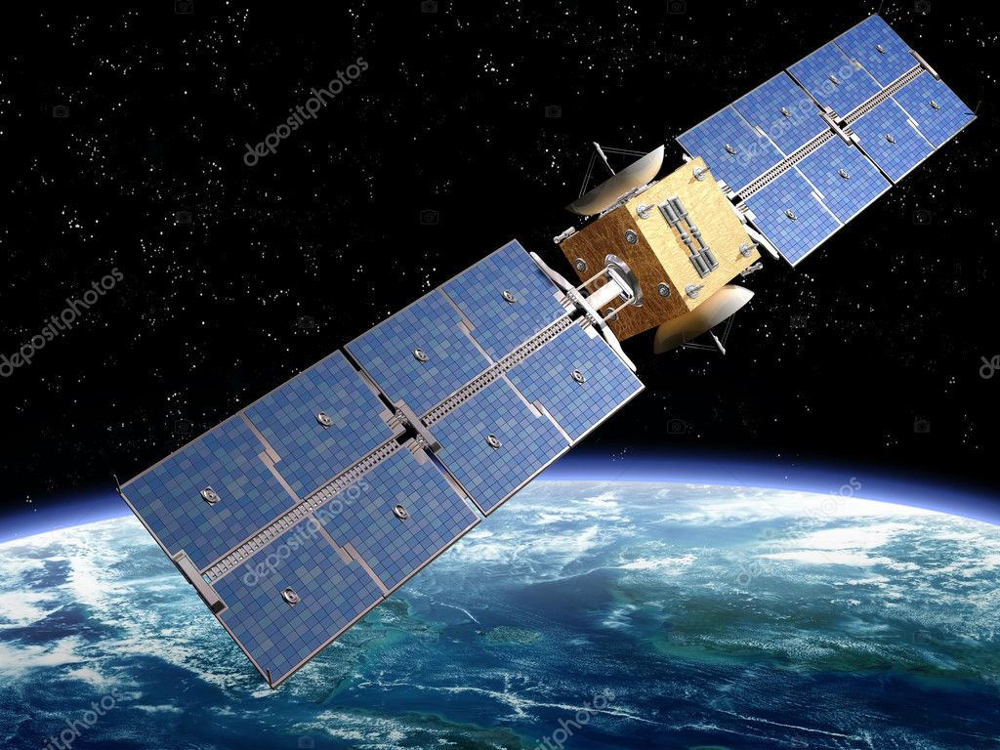
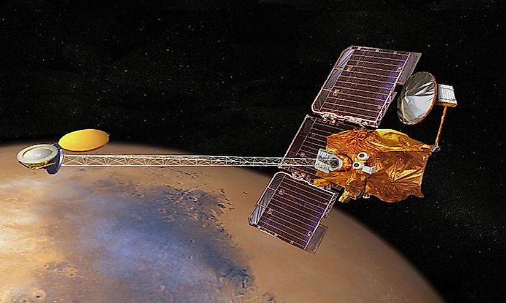
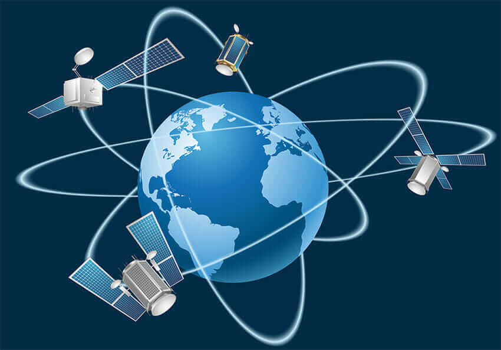
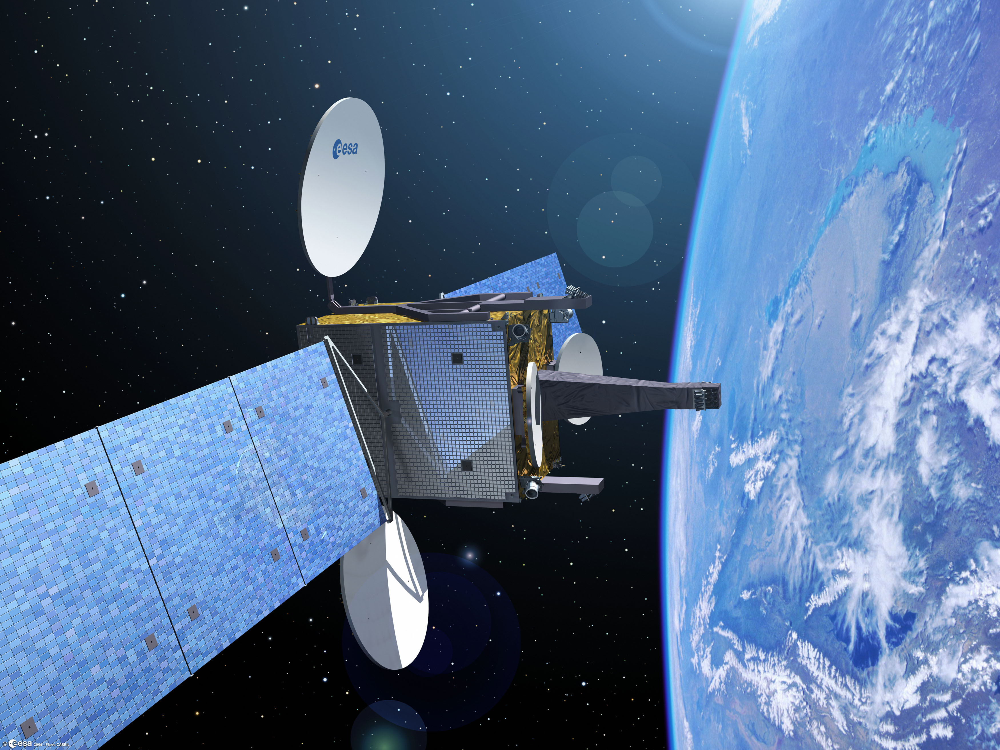
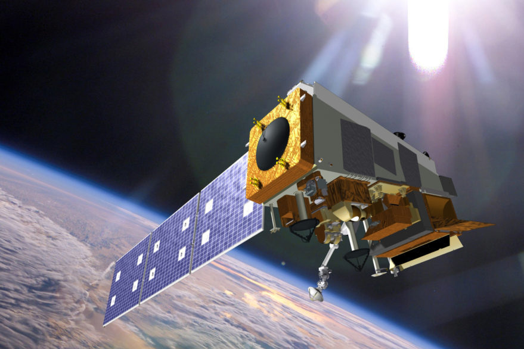
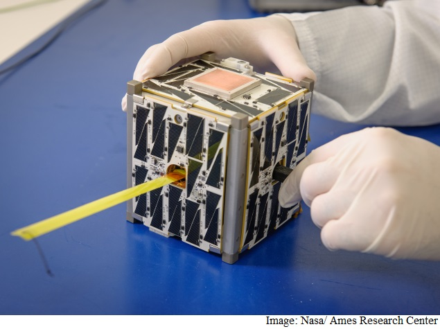

List of our products
-

Communications Satellite
A communications satellite is an artificial satellite that relays and amplifies radio telecommunication signals via a transponder; it creates a communication channel between a source transmitter and a receiver at different locations on Earth. Communications satellites are used for television, telephone, radio, internet, and military applications.Most communications satellites are in geostationary orbit 22,300 miles (35,900 km) above the equator, so that the satellite appears stationary at the same point in the sky; therefore the satellite dish antennas of ground stations can be aimed permanently at that spot and do not have to move to track the satellite.
The high frequency radio waves used for telecommunications links travel by line of sight and so are obstructed by the curve of the Earth. The purpose of communications satellites is to relay the signal around the curve of the Earth allowing communication between widely separated geographical points.
-

Remote Sensing Satellite
Remote sensing is the acquisition of information about an object or phenomenon without making physical contact with the object, in contrast to in situ or on-site observation. The term is applied especially to acquiring information about the Earth and other planets. Remote sensing is used in numerous fields, including geography, land surveying and most Earth science disciplines (for example, hydrology, ecology, meteorology, oceanography, glaciology, geology); it also has military, intelligence, commercial, economic, planning, and humanitarian applications, among others.
Remote sensing can be divided into two types of methods: Passive remote sensing and Active remote sensing. Passive sensors gather radiation that is emitted or reflected by the object or surrounding areas. Reflected sunlight is the most common source of radiation measured by passive sensors. Examples of passive remote sensors include film photography, infrared, charge-coupled devices, and radiometers. Active collection, on the other hand, emits energy in order to scan objects and areas whereupon a sensor then detects and measures the radiation that is reflected or backscattered from the target. RADAR and LiDAR are examples of active remote sensing where the time delay between emission and return is measured, establishing the location, speed and direction of an object.
-
Navigation Satellite
A satellite navigation or satnav system is a system that uses satellites to provide autonomous geo-spatial positioning. It allows small electronic receivers to determine their location (longitude, latitude, and altitude/elevation) to high precision (within a few centimeters to metres) using time signals transmitted along a line of sight by radio from satellites. The system can be used for providing position, navigation or for tracking the position of something fitted with a receiver (satellite tracking).
Satellite Navigation service is an emerging satellite based system with commercial and strategic applications.Our team is committed to provide the satellite based Navigation services to meet the emerging demands of the Civil Aviation requirements and to meet the user requirements of the positioning, navigation and timing based on the independent satellite navigation system.
-

Global Positioning System (GPS)
The Global Positioning System (GPS), originally Navstar GPS,is a satellite-based radionavigation system owned by the United States government and operated by the United States Space Force.It is one of the global navigation satellite systems (GNSS) that provides geolocation and time information to a GPS receiver anywhere on or near the Earth where there is an unobstructed line of sight to four or more GPS satellites.Obstacles such as mountains and buildings can block the relatively weak GPS signals.
The GPS does not require the user to transmit any data, and it operates independently of any telephonic or Internet reception, though these technologies can enhance the usefulness of the GPS positioning information. The GPS provides critical positioning capabilities to military, civil, and commercial users around the world. The United States government created the system, maintains and controls it, and makes it freely accessible to anyone with a GPS receiver.
-

Geostationary Satellites (GEOs)
A geosynchronous satellite is a satellite in geosynchronous orbit, with an orbital period the same as the Earth's rotation period. Such a satellite returns to the same position in the sky after each sidereal day, and over the course of a day traces out a path in the sky that is typically some form of analemma. A special case of geosynchronous satellite is the geostationary satellite, which has a geostationary orbit a circular geosynchronous orbit directly above the Earth's equator. Another type of geosynchronous orbit used by satellites is the Tundra elliptical orbit.Geostationary satellites have the unique property of remaining permanently fixed in exactly the same position in the sky as viewed from any fixed location on Earth, meaning that ground-based antennas do not need to track them but can remain fixed in one direction. Such satellites are often used for communication purposes; a geosynchronous network is a communication network based on communication with or through geosynchronous satellites.
-

Polar Satellite
A polar orbit is one in which a satellite passes above or nearly above both poles of the body being orbited (usually a planet such as the Earth, but possibly another body such as the Moon or Sun) on each revolution. It has an inclination of about 60 - 90 degrees to the body's equator.A satellite in a polar orbit will pass over the equator at a different longitude on each of its orbits.
Launching satellites into polar orbit requires a larger launch vehicle to launch a given payload to a given altitude than for a near-equatorial orbit at the same altitude, due to much less of the Earth's rotational velocity being taken advantage of to achieve orbit.Polar orbits are often used for Earth-mapping, Earth observation, capturing the Earth as time passes from one point, reconnaissance satellites, as well as for some weather satellites.The Iridium satellite constellation also uses a polar orbit to provide telecommunications services. This differs from a geosynchronous orbit in which one spot on the Earth's surface can be sensed continuously from a satellite.
-

Nano Satellites, CubeSats and SmallSats
A small satellite, miniaturized satellite, or smallsat is a satellite of low mass and size, usually under 500 kg (1,100 lb). While all such satellites can be referred to as "small", different classifications are used to categorize them based on mass. Satellites can be built small to reduce the large economic cost of launch vehicles and the costs associated with construction. Miniature satellites, especially in large numbers, may be more useful than fewer, larger ones for some purposes for example, gathering of scientific data and radio relay. Technical challenges in the construction of small satellites may include the lack of sufficient power storage or of room for a propulsion system.One rationale for miniaturizing satellites is to reduce the cost; heavier satellites require larger rockets with greater thrust that also have greater cost to finance. In contrast, smaller and lighter satellites require smaller and cheaper launch vehicles and can sometimes be launched in multiples.